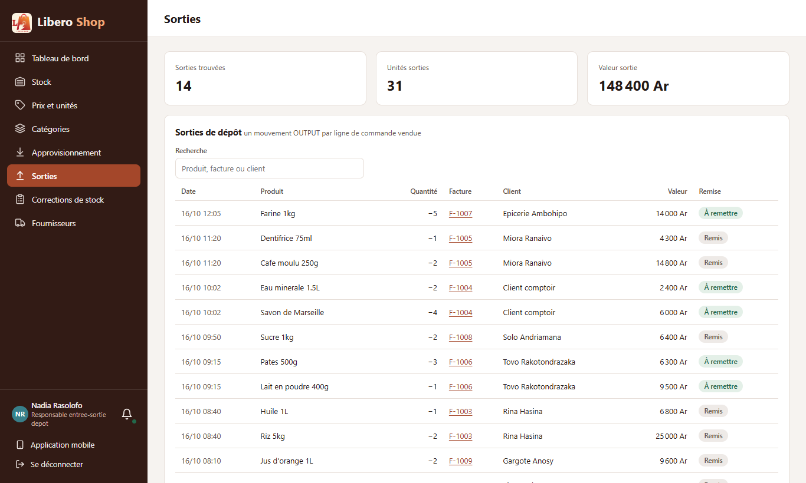
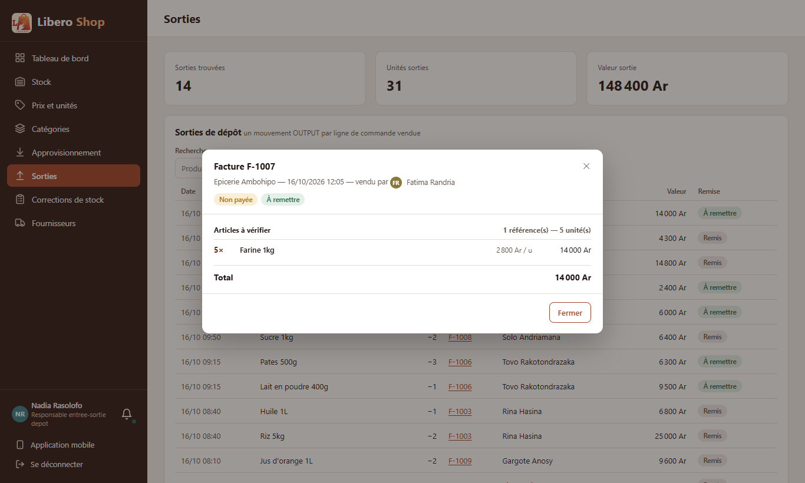
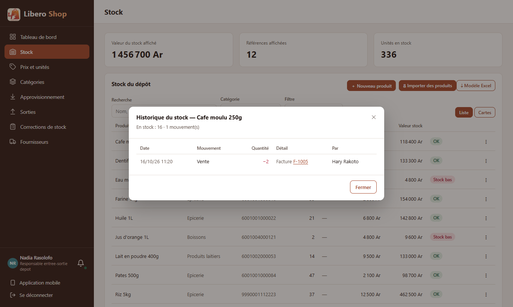
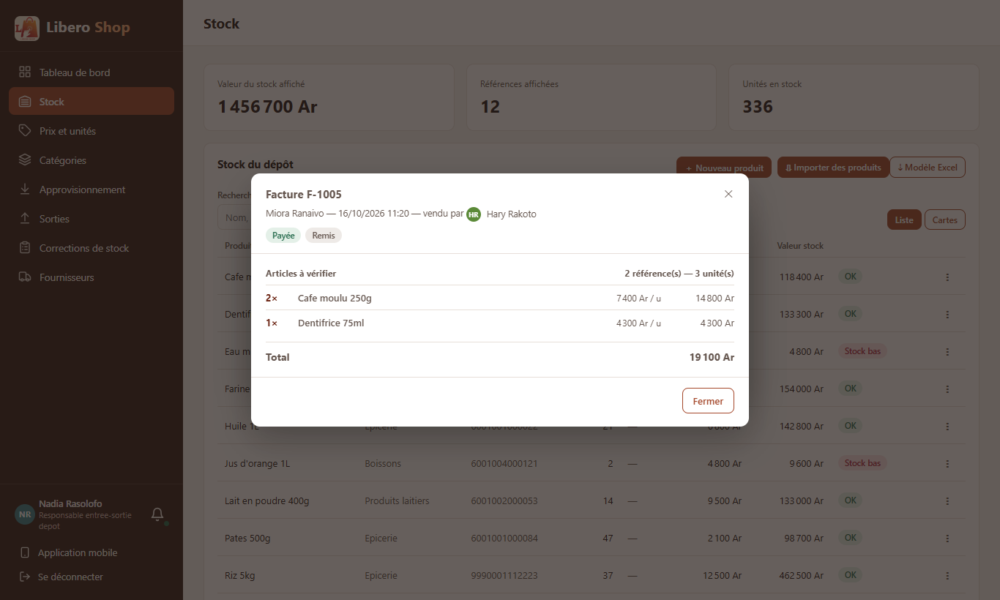

← Tous les comptes rendus de l'interface
UI-50Numéro de facture cliquable
- Partout où un numéro de facture était écrit seul, il est maintenant souligné et cliquable.
- Un clic ouvre la fenêtre de la facture : client, vendeur, statut, articles et total.
- Écrans concernés : Sorties, Historique du stock d'un produit, Argent en main et Versements du dépôt, Versements reçus de la caisse.
- La facture n'est lue qu'au clic : une liste de cinquante sorties ne charge pas cinquante factures.
- Côté serveur : chaque ligne de l'historique d'un produit donne maintenant l'identifiant de sa facture.
1. Le problème
Dans les sorties de stock, l'historique d'un produit ou les versements d'argent, on lisait « F-1005 » sans pouvoir voir ce qu'il y avait sur cette facture. Il fallait aller dans Factures, la rechercher, puis revenir.
2. Ce qui a été fait
Un petit composant, app-invoice-link, remplace le numéro écrit. Il réutilise la fenêtre de facture qui
existait déjà (app-invoice-detail-dialog). Il ne fait que montrer : payer, livrer ou annuler restent sur
les écrans de commandes.
Qui voit quoi ne change pas : le serveur décide, comme dans Factures. Le responsable de dépôt et l'administrateur voient toutes les factures ; une facture hors des droits du compte affiche un message au lieu de s'ouvrir.
3. Le résultat en images
Sorties
Nadia — responsable de dépôt


Historique du stock d'un produit


4. Limites connues
5. Tableau récapitulatif
| Fichier | Changement |
|---|---|
ui/…/shared/components/invoice-link.component.ts | nouveau : numéro cliquable qui ouvre la facture |
ui/…/features/depot-manager/stock-outputs.component.ts | colonne « Facture » en liens |
ui/…/shared/components/stock-history-dialog.component.ts | « Facture … » en lien |
ui/…/features/depot/cash-in-hand.component.ts, depot-cash.component.ts | numéros en liens (tableau et cartes du téléphone) |
ui/…/features/cashier/remittance-inbox.component.ts | numéros en liens dans les versements reçus |
backend/…/web/dto/ProductMovementResponse.java, ui/…/core/models/stock-movement.model.ts | l'historique donne invoiceId en plus du numéro |
| Règle | Test |
|---|---|
| Une sortie de l'historique donne la facture à ouvrir ; une correction n'en a pas | ProductMovementResponseTest — sortieDonneLaFactureAOuvrir, correctionSansFacture |
| Rien n'est lu avant le clic ; le clic ouvre la facture nommée | invoice-link.component.spec.ts |
Tests : serveur au vert, interface au vert (218 tests).